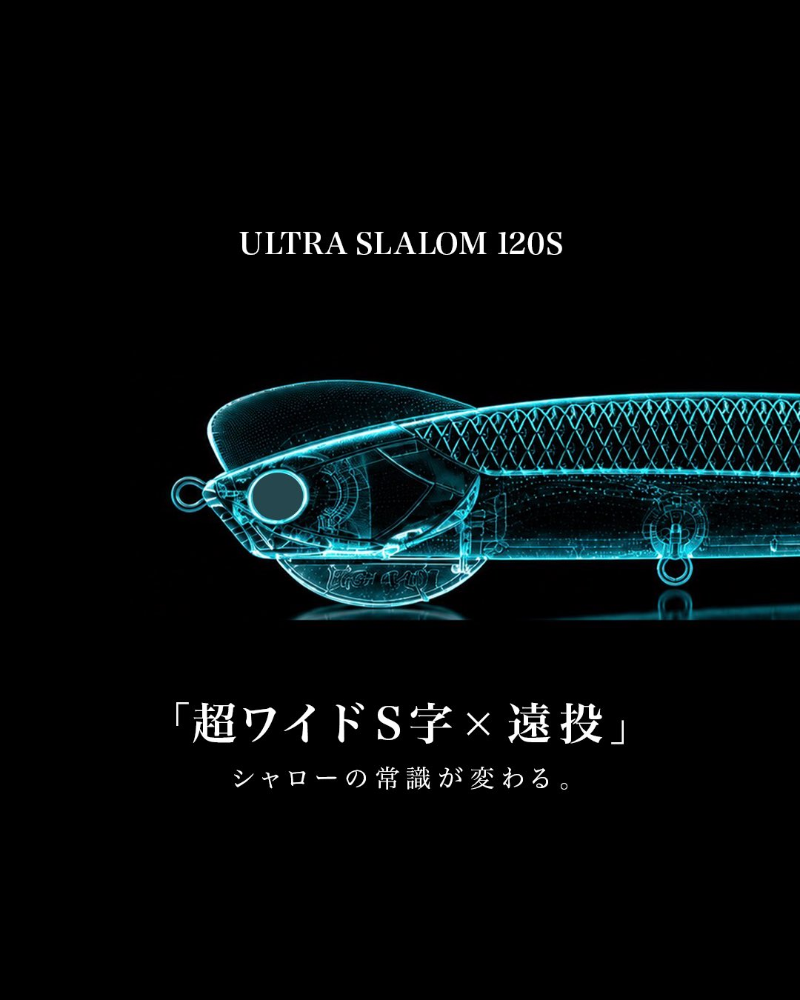

HIGH RAD（ハイラッド）2026年始動、高橋優介が立ち上げた新ルアーブランド
「THE BEST GEAR FOR THE BEST MOMENTS（最高の瞬間のための、最高のギア）」を掲げる新ブランド。第1弾は「超ワイドS字×遠投」をうたうULTRA SLALOM 120Sです。

画像出典:高橋優介さん公式X
基本データ
| ブランド名 | HIGH RAD（ハイラッド） |
|---|---|
| 立ち上げ | 2026年10月に発表 |
| 立ち上げた人 | 高橋 優介（プロアングラー） |
| 本拠地 | 未公表 |
| 第1弾ルアー | ULTRA SLALOM 120S（ウルトラスラローム120S） |
| コンセプト | THE BEST GEAR FOR THE BEST MOMENTS （最高の瞬間のための、最高のギア） |
| 公式 | X（@HIGHRAD_JAPAN） ※公式サイトは未公開 |
※2026年10月24日時点で、公式X（@HIGHRAD_JAPAN）と高橋優介さんのXで公開されている情報をもとにしています。会社情報・製品の詳細は今後の発表をご確認ください。
HIGH RADの3つの特徴
1人気アングラー・高橋優介が立ち上げたブランド
シーバスゲームを中心にメディアやSNSで活躍してきたプロアングラー、高橋優介さんが2026年10月に立ち上げを発表した新しいルアーブランドです。発表の投稿は大きな反響を呼び、公式Xアカウントも開設から間もなく多くのフォロワーを集めています。
2「最高の瞬間のための、最高のギア」というコンセプト
掲げるのは「THE BEST GEAR FOR THE BEST MOMENTS」。記憶に残る一匹との出会いや、心を揺さぶる一瞬──そんな最高の瞬間を生み出すためのギアを作る、というのがブランドの軸になっています。
3第1弾から「これまでの常識を覆す」ルアー
立ち上げの時点で第1弾のルアーはすでに完成しており、高橋さん自身が「これまでの常識を覆す、画期的なルアー」と自信を見せています。その第1弾が、「超ワイドS字×遠投」「シャローの常識が変わる。」をうたうULTRA SLALOM 120Sです。
HIGH RADの歩み
| 2026年9月 | 公式Xアカウント（@HIGHRAD_JAPAN）を開設 |
|---|---|
| 2026年10月16日 | 高橋優介さんが新ルアーブランド「HIGH RAD（ハイラッド）」の立ち上げを発表。公式Xで第1弾「ULTRA SLALOM（ウルトラスラローム）」を公開 |
| 2026年10月22日 | 公式Xでテスターの募集を開始 |
※公式X・高橋優介さんのXの投稿から抜粋しています。
HIGH RADの第1弾ルアー
現在公開されているのは第1弾の1モデルです。発売日・価格・スペックなどの詳細はまだ発表されていません。

ULTRA SLALOM 120Sリップ付きルアー
HIGH RADが「最初の一手」として公開したルアー。キャッチコピーは「超ワイドS字×遠投」「シャローの常識が変わる。」で、名前のとおり大きなS字（スラローム）アクションと飛距離の両立をうたっています。
公開されたイメージ画像では、透けたボディにリップと内部の構造が描かれています。サイズ表記は「120S」ですが、重さや潜行レンジなどの詳しいスペックは今後の発表待ちです。
画像出典:HIGH RAD公式X
ブランドを立ち上げた高橋優介
高橋 優介
HIGH RAD 立ち上げ人／プロアングラーシーバスゲームを中心に活躍する若手プロアングラー。BlueBlueのスタッフとしてルアーの開発やテストに携わり、YouTubeやSNS、釣りメディアでも多くのファンを持つ。アパレルブランド「RAD STYLE（ラッドスタイル）」も手がけている。
👉 高橋さんとゆかりのある BlueBlue（ブルーブルー）のメーカー記事 もあわせてどうぞ
シーバス界を代表する若手アングラーのブランド
LEGARE・HIGH RAD・GOTO9は、どれもシーバスシーンを代表する若手アングラーが率いるブランドです。それぞれの釣りの考え方がルアーに表れているので、あわせてチェックしてみてください。
LEGARE（レガーレ）
代表：安田ヒロキ1990年生まれ・横浜出身で、東京湾がホーム。19歳だった2009年に釣具メーカーと契約し、2020年10月に自身が代表を務めるLEGAREを立ち上げました。磁石でヘッドを付け替える「MAG HEAD」のUNIFORCEなど、アイデアのあるルアーを公式オンラインストアで直接届けています。
👉 LEGAREのメーカー記事 へ
HIGH RAD（ハイラッド）（この記事）
立ち上げ人：高橋優介シーバスゲームを中心に活躍する若手プロアングラーの高橋優介さんが、2026年10月に立ち上げを発表した新しいルアーブランド。高橋さんはBlueBlueのスタッフとして、ルアーの開発やテストにも携わってきました。
GOTO9（ゴートゥーナイン）
代表：新 拓也「生活圏で、空き時間に楽しむショアルアー」がコンセプトの兵庫県西宮市のブランド。新 拓也さんが開発したバチ抜けルアー「SWARM130」など、街の近くの港湾・河川で使いやすいルアーをそろえています。
👉 GOTO9のメーカー記事 へ
よくある質問
HIGH RADはどこのメーカー？
プロアングラーの高橋優介さんが2026年10月に立ち上げを発表した、日本の新しいルアーブランドです。会社情報や本拠地はまだ公表されていません。
読み方は？
「ハイラッド」と読みます。公式の表記は「HIGH RAD」です。
ULTRA SLALOM（ウルトラスラローム）はいつ発売？
2026年10月24日時点では、発売日・価格ともに発表されていません。最新情報は公式X（@HIGHRAD_JAPAN）で随時公開されるとのことです。